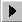

Todos los informes pueden emitirse en formatos personalizados. Para ello, en todas las ventanas de solicitud de informes, se incluye el campo Formato personalizado donde es posible indicar el nombre del archivo correspondiente al formato. Si éste no se informa, los listados se emiten utilizando los formatos de emisión estándar del sistema.
El emitir los informes en formatos personalizados posibilita modificar libremente el aspecto de los mismos. Se podrá cambiar la orientación de la hoja, modificar los estilos de fuentes, por ejemplo, exhibiendo textos en negrita o en cursiva, quitar o agregar columnas, incluir cortes de control, efectuar modificaciones de formatos,etc.
Debe tenerse en cuenta que no se debe trabajar sobre los archivos correspondientes a los formatos originales (estándar) provistos por el sistema, sino que se deben generar nuevos archivos de formatos (por ejemplo, trabajando sobre copias de los originales).
Independientemente del formato que se utilice, todos los informes pueden ser impresos, consultados por pantalla o guardados en archivos para su posterior consulta o utilización con editores de textos, planillas de cálculo, bases de datos, etc.
Todos los procesos de emisión de listados pueden ser interrumpidos seleccionando la opción Cancelar que aparece mientras se realiza el procesamiento de los datos para tal emisión.
Estos iconos te serán de utilidad durante la tarea:
| Icono | Acción |
|---|---|
| Ir al primer elemento | |
| Ir al último elemento | |
|  | Avanzar al siguiente |
| Retroceder al anterior |